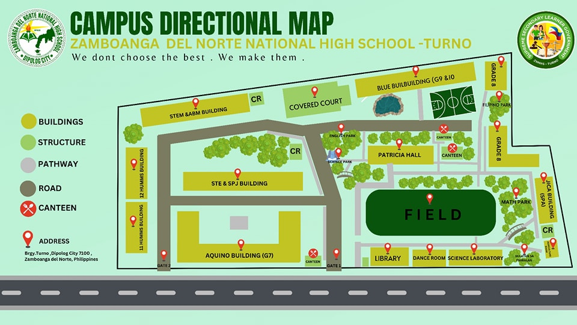

FACILITIES
The faculties at Zamboanga del Norte National High School Turno are equipped with a wide range of tools that are intended to improve the education and growth of students. Our facilities accommodate a wide range of interests, from the state-of-the-art EIM Lab, Chem Lab, and Bio Lab to artistic areas like the Rondalla Room and Instrumental Music Room. Along with vital resources like the Library Hub and ICT Lab, specialized spaces like the BPP Lab, Cookery Lab, and Technical Drafting Room prepare students for academic success and promote an innovative and exceptional culture.
Guide Map:
